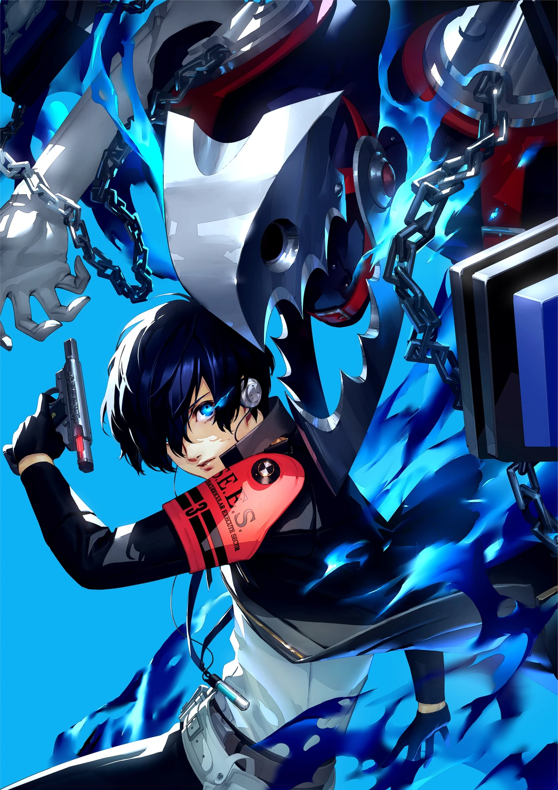
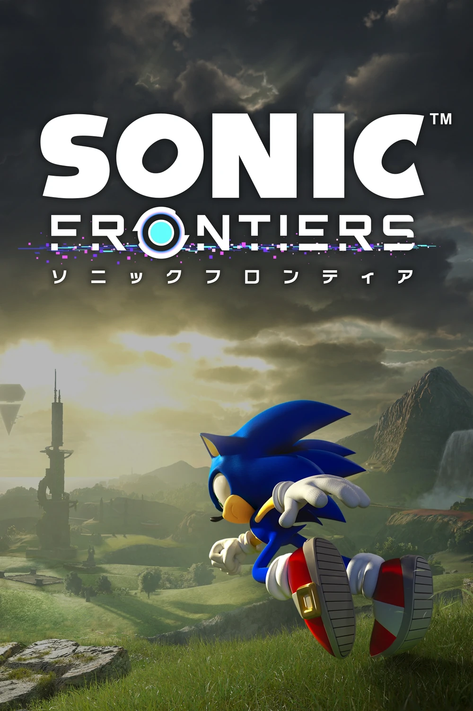
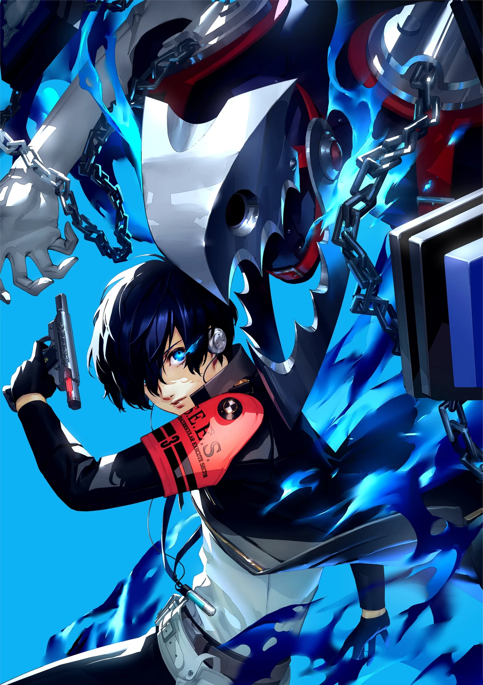
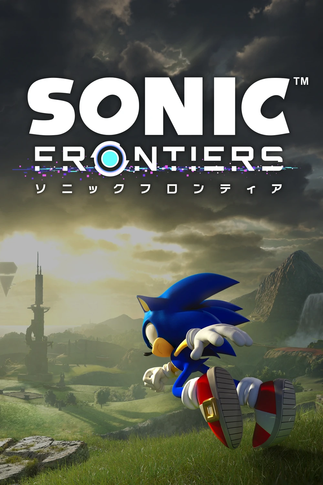

История компании Sega
Компания SEGA была основана в 1960 году в Японии, изначально занимаясь производством игровых автоматов.
В 1980-х она стала одним из лидеров в индустрии видеоигр, выпустив культовые аркады вроде Space Harrier и Out Run.

Настоящий взлёт произошёл с выходом консоли Sega Mega Drive (Genesis), которая успешно конкурировала с Nintendo и подарила миру легендарного персонажа — Соника.
Однако в 1990-х компания потеряла позиции из-за неудачных консолей Sega Saturn и Dreamcast.
В начале 2000-х SEGA прекратила выпуск собственных консолей и сосредоточилась на разработке игр.
Сегодня она известна как издатель популярных серий — Yakuza, Total War, Persona и Sonic the Hedgehog.
 



Несмотря на трудные времена, SEGA по-прежнему остаётся одной из самых влиятельных компаний в истории игровой индустрии.
История компании Sega.docx